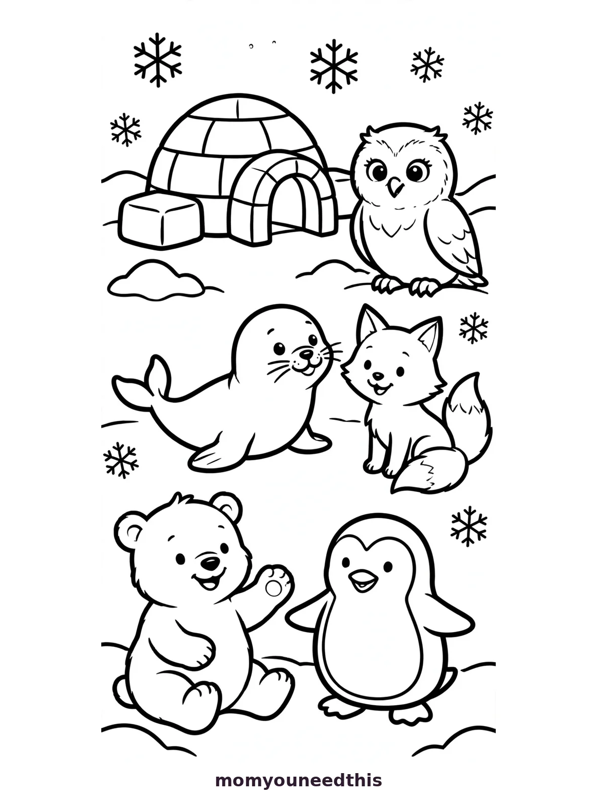
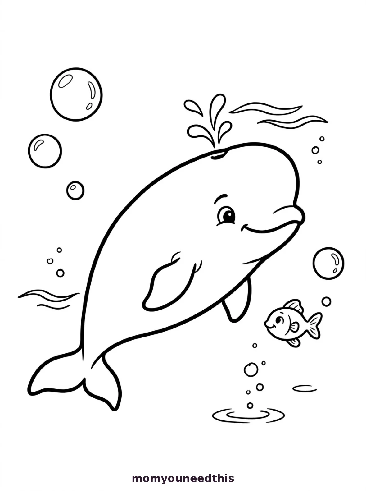
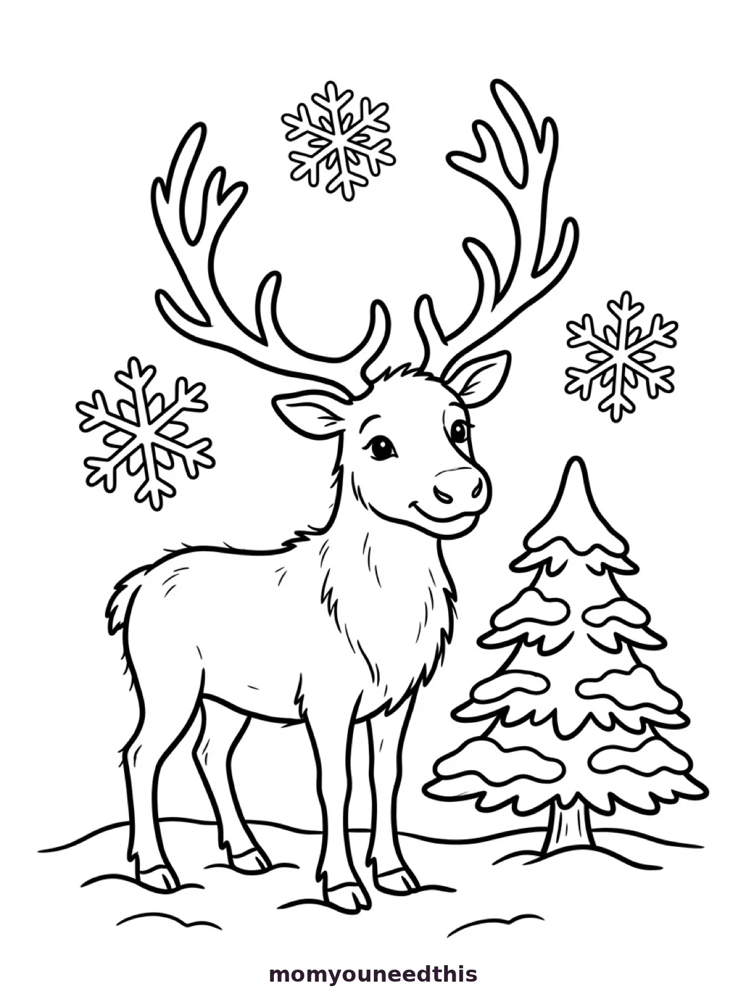

Free Arctic Animals Coloring Sheets
Looking for free arctic animals coloring sheets? Download our free original Arctic Animals Coloring Sheets printable below — no signup needed. Just tap download, print, and let the coloring fun begin! Perfect for toddlers, preschoolers and kids who love polar bears, penguins, and snowy owls.
Quick Answer
These free arctic animals coloring sheets star the animals of the far north: a walrus on an ice floe, a beluga whale underwater and a caribou in the snow, plus a first sheet to open the set. Four sheets in all, with bold outlines for little hands. Made for toddlers and preschoolers — print free, no signup.
At a Glance
- Ages: 1–5
- Pages: 4 free printables
- Format: Print at home, letter size
- Cost: Free, no signup
- Supplies: Crayons or markers
- Time: 10–20 minutes
🐾 Arctic Animals Coloring Sheets

🎨 Download Your Free Arctic Animals Coloring Sheets
A cute, original arctic animals coloring sheets made for little hands — bold outlines, big spaces, zero signup.
⬇️ Download Free Coloring Page 🖨️ Print🎁 Free printable for toddlers & preschoolers
🦭 Walrus Coloring Page

🎨 Download the Walrus Coloring Page
A walrus with long tusks sitting on an ice floe, two fish jumping and big snowflakes falling — bold outlines, big spaces, zero signup.
⬇️ Download Walrus Page 🖨️ Print Walrus Page🎁 Free printable for toddlers & preschoolers
🐳 Beluga Whale Coloring Page

🎨 Download the Beluga Whale Coloring Page
A beluga whale swimming underwater with a small fish, bubbles all around — bold outlines, big spaces, zero signup.
⬇️ Download Beluga Page 🖨️ Print Beluga Page🎁 Free printable for toddlers & preschoolers
🦌 Caribou Coloring Page

🎨 Download the Caribou Coloring Page
A caribou with big antlers standing in the snow beside a snowy pine tree, snowflakes falling — bold outlines, big spaces, zero signup.
⬇️ Download Caribou Page 🖨️ Print Caribou Page🎁 Free printable for toddlers & preschoolers
🖨️ How to Use This Activity Hub
Get started in minutes — everything here is free and made for busy parents.
Pick an activity below. Browse the Arctic Animals Coloring Sheets collection and choose one that fits your child's mood today.
Download it free. Every activity page includes a free printable download — no signup needed.
Print and play together. Print at home, then learn side by side in short, fun sessions.
Come back for more. New printables are added regularly, so there is always something fresh to try.
❄️ Fun With This Arctic Animals Coloring Sheets Printable
These arctic animals coloring sheets turn a quiet afternoon into a trip to the far north. Print the sheet, grab crayons in icy blues and whites, and let your child bring a polar bear, a penguin, and a snowy owl to life. Every animal has big, simple shapes, so even a one-year-old can scribble happily inside the lines.
Start by naming each animal together. Point to the polar bear and say its name, then let your child pick the first colour. Toddlers love choosing, and choosing builds confidence. There is no wrong colour here — a purple penguin is just as wonderful as a black-and-white one.
These arctic animals coloring sheets also make a calm-down activity. Colouring is slow, focused work, and the cold-climate theme pairs well with a cozy blanket and a warm drink. Keep a stack printed for snow days, sick days, and long winter afternoons.
When the colouring is done, tape the finished arctic animals coloring sheets to a window or the fridge. A row of coloured polar bears makes a frosty winter display, and your child gets to see their work celebrated.
🧊 Why Arctic Animals Coloring Sheets Work So Well
Arctic animals coloring sheets work because they pair a new world with a familiar activity. Most kids have never seen a walrus or a beluga whale in real life, so every animal is a discovery. Colouring gives them time to look closely at each animal's shape — the polar bear's round ears, the penguin's waddle-ready feet, the snowy owl's wide eyes.
Colouring also builds the skills kids need for writing. Gripping a crayon, staying inside a big outline, and choosing colours all strengthen little hand muscles. These arctic animals coloring sheets use bold outlines and wide spaces on purpose, so the page never feels frustrating for a toddler.
The Arctic theme adds vocabulary naturally. Words like igloo, blubber, glacier, and tundra come up while you talk about the animals. You do not need a lesson plan — just name what you see, ask what your child notices, and let the conversation grow from the page.
Finally, arctic animals coloring sheets are screen-free. No app, no video, no noise — just paper, crayons, and your child. That quiet focus is a gift on busy days, and the finished page is something real to keep.
🐻❄️ Meet the Arctic Animals
Eight friendly faces are waiting on these sheets. The polar bear is the biggest Arctic hunter, with thick fur that keeps it warm on the ice. The penguin waddles on land but swims like a rocket in the sea. The seal loves to sunbathe on ice floes, and the snowy owl watches the tundra with bright yellow eyes.
The arctic fox changes colour with the seasons — white in winter, brown in summer — so it can hide in snow or rocks. The walrus uses its long tusks to pull itself onto the ice. The beluga whale is called the canary of the sea because it sings and chirps. And the caribou travels farther than almost any land animal, walking hundreds of miles across the tundra.
While colouring, ask your child which animal is their favourite. Count the animals together, sort them by size, or sort them into swimmers and walkers. These little games turn one printable into a full learning session, and every answer is worth celebrating.
If your child wants more, the animal coloring pages hub has even more creatures to meet — from farm friends to ocean explorers. One printable leads to the next, and the Arctic is a great place to start.
🖍️ Print & Play: Arctic Learning Ideas
Try a colour-by-animal game: colour the polar bear white, the penguin black and white, the arctic fox grey, and the snowy owl cream. Then let your child invent the rest. Mixing real colours with silly ones is how creativity grows.
Make it a counting game. Count the snowflakes on the sheet, count the animals, and count how many crayons you used. Early math hides inside every colouring session, and kids learn it without noticing.
Build a mini Arctic scene. Print two copies of the sheet, cut out the animals from one, and glue them onto blue paper with cotton-ball snow. This simple craft turns flat colouring into a little diorama your child will be proud of.
Finish by reading the animals' names aloud together. Point to each one and say its name slowly. Hearing and saying new words — polar bear, beluga, caribou — builds the vocabulary that later becomes reading.
❓ Arctic Animals Coloring Sheets FAQs
Everything parents ask about these free arctic animals coloring sheets.
What animals are on these arctic animals coloring sheets?
These arctic animals coloring sheets feature polar bears, penguins, seals, snowy owls, arctic foxes, walruses, beluga whales, and caribou — all with bold outlines for little hands.
Are these arctic animals coloring sheets free to print?
Yes — these arctic animals coloring sheets are 100% free to download and print at home. No signup or payment needed.
What ages are these arctic animals coloring sheets for?
These arctic animals coloring sheets are made for toddlers and preschoolers, ages 1 to 5. The shapes are big, the outlines are bold, and little hands can colour comfortably.
How do I print the arctic animals coloring sheets?
Tap the download button to save the sheet, then print it at home on any printer. You can also tap Print to open the sheet in a new tab and print straight from there. The print button opens the full-size page in a new tab if you prefer to print from there.
Can I use these arctic animals coloring sheets in the classroom?
Yes — teachers and homeschool parents can print these arctic animals coloring sheets for classroom colouring time, winter units, and polar animal lessons.
Do these arctic animals coloring sheets teach anything?
Yes — while colouring, kids learn animal names, cold-climate habitats, and new words like igloo, blubber, and tundra. Colouring also builds fine motor skills and focus.
🔗 More Free Printables You’ll Love
Pair this printable with more free learning activities from the MomYouNeedThis library.
- 🐾 Animal Coloring PagesFree animal coloring printables for toddlers and preschoolers.
- 🌊 Ocean Coloring PagesFree ocean animal coloring printables for toddlers and preschoolers.
- 🐄 Farm Coloring PagesFree farm animal coloring printables for toddlers and preschoolers.
- 🐱 Cat Coloring PagesFree cat coloring printables for toddlers and preschoolers.
- 🦕 Dinosaur Coloring PagesFree dinosaur coloring printables for toddlers and preschoolers.